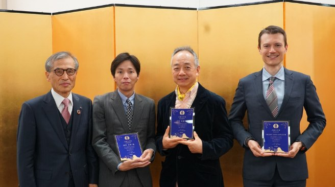
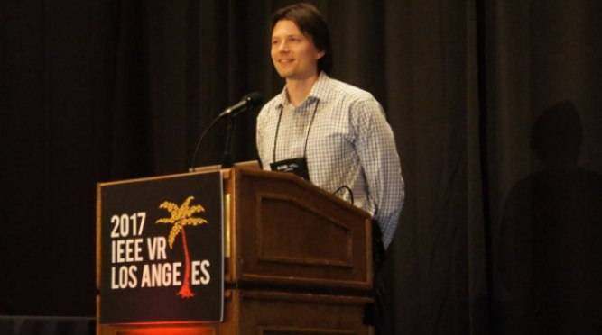
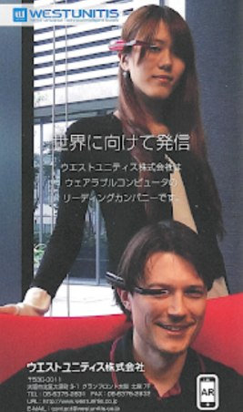

News and Media
Media appearances, awards, presentations, and research highlights featuring Jason Orlosky.
Interview with Fox 54 regarding deepfakes and augmented reality.

Receipt of the Osaka University Award, given by the president of Osaka University.

Presentation of our telediagnosis system at IEEE VR.
Meeting the mayors of Osaka and San Francisco as part of an entrepreneurial delegation.
Research spot for Osaka University's Cybermedia Center flier.

FIGS Magazine, Osaka.